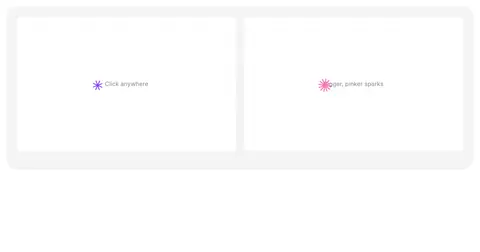
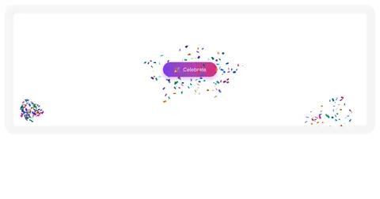

Cursor effects and pointer interactions for egui
Pointer-driven effects: click sparks and ripples, ribbon, pixel and image trails, smooth and target cursors, magnets, confetti and fireworks, lenses, scratch-to-reveal and before/after compare sliders.
All Cursor & Interaction components

Click Spark
Cursor & InteractionLines of light burst outward from every click. Wraps any area without stealing its clicks.
Click Ripple
Cursor & InteractionConcentric rings ripple out from each click like a drop hitting water.
Pointer Trail
Cursor & InteractionA glowing comet tail chases the pointer and shrinks away when it stops.
Ribbons
Cursor & InteractionSilky ribbons chase the pointer on springs of different stiffness, weaving around each other.
Pixel Trail
Cursor & InteractionCells of an invisible grid light up under the pointer and fade out, leaving a pixelated trail.
Card Trail
Cursor & InteractionMoving the pointer drops a trail of cards that pop in, tilt and shrink away (image trail).
Blob Cursor
Cursor & InteractionGooey blobs chase the pointer with growing lag and melt into each other like liquid.
Smooth Cursor
Cursor & InteractionA custom cursor glides after the pointer on a spring, turning to face its direction of travel.
Following Pointer
Cursor & InteractionA collaborator-style pointer with a name tag that trails the cursor over a card.
Crosshair
Cursor & InteractionHairlines track the pointer across the area, with an intersection ring and live coordinates.
Target Cursor
Cursor & InteractionSpinning corner brackets follow the pointer and snap around whatever target it hovers.
Magnet
Cursor & InteractionWraps any content and pulls it toward a nearby pointer, springing back when it leaves.

Confetti
Cursor & InteractionConfetti bursts from a point, tumbles in 3D and flutters down. Fire it from code or on click.
Fireworks
Cursor & InteractionRockets streak up and burst into glowing, falling sparks. Click to launch your own.
Sticker Peel
Cursor & InteractionA die-cut sticker you drag to peel: the corner folds back along a crease, showing its paper back and a curl shadow.
Magnet Lines
Cursor & InteractionA grid of short lines that all swivel to point at the pointer, glowing in the accent color nearby.
Shape Blur
Cursor & InteractionSoft, out-of-focus outlines that snap into crisp focus wherever the pointer gets close.
Lens
Cursor & InteractionA magnifying glass over any painted scene: the content is re-painted larger inside a glassy circular lens.
Mask Reveal
Cursor & InteractionA circular mask follows the pointer and reveals an alternate version of the content underneath; it swells on hover.
Animated Tooltip
Cursor & InteractionOverlapping avatars; the hovered one lifts and a name tooltip pops above it, swinging with the pointer on a loose spring.
Scratch To Reveal
Cursor & InteractionA shimmering foil you scratch away with the pointer; past 50% the rest dissolves and it reports `revealed`. Self-scratches when idle.
Compare Slider
Cursor & InteractionBefore / after comparison of two painted scenes with a draggable divider and grab handle; sweeps on its own when idle.
Hover Image List
Cursor & InteractionBig project titles; hovering one summons a photo that trails the pointer on a spring, tilting as it moves and sliding to the next image.
Ink Trail
Cursor & InteractionA surface the cursor paints into: a glowing trail that drifts on a slow noise current and fades, like an ember on dark themes and wet ink on light ones.
Dither Lens
Cursor & InteractionA photograph that turns into an ordered-dither print inside a ragged, flickering zone that follows the pointer.
Mosaic Trail
Cursor & InteractionA field of tiny greyscale thumbnails that swell and bloom into colour along the pointer's path, then shrink back to dots.
Cursor Ring Field
Cursor & InteractionA field of scattered capsules lit by a soft ring trailing the pointer: capsules on the ring brighten, turn and get pushed outward, then drift back.
Fluid Trail
Cursor & InteractionThe pointer stirs a small real-time fluid simulation, leaving glowing, color-cycling dye that curls and fades behind it.
Hover Image Reveal
Cursor & InteractionA list of large names; hovering a row floats an image window that follows the pointer on a spring, tilts with its speed and swaps image per row.